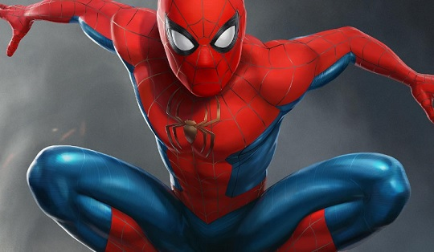

Eacola dirce c amaral
henrique 1
Eu gosto da escola ela e muito legal e bem organizada os professores também são muito legais eu gostei muito de estuda aq nessa escola.
felipe 2
A Escola Dirce Celestino do Amaral é uma instituição de ensino localizada no Brasil, mais especificamente na cidade de Curitiba. Ela é conhecida por oferecer educação de qualidade e por se dedicar ao desenvolvimento integral dos alunos, promovendo tanto o aprendizado acadêmico quanto o desenvolvimento social e emocional.
raimundo 3

Escola geralmente adota metodologias que incentivam a participação ativa dos alunos, a criatividade e o pensamento crítico. Além disso, você pode oferecer uma variedade de atividades extracurriculares, como esportes, artes e projetos comunitários, desenvolvendo uma formação mais ampla.